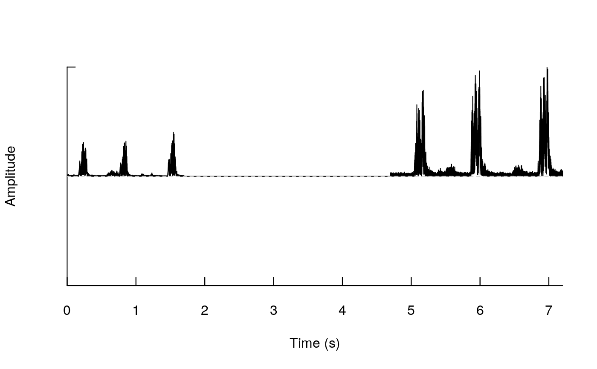

rm_sil.Rdrm_sil Removes silences in wave files
rm_sil(path = NULL, min.sil.dur = 2, img = TRUE, it = "jpeg", flim = c(0, 12), flist = NULL, parallel = 1, pb = TRUE)
| path | Character string containing the directory path where the sound files are located.
If |
|---|---|
| min.sil.dur | Numeric. Controls the minimum duration of silence segments that would be removed. |
| img | Logical argument. If |
| it | A character vector of length 1 giving the image type to be used. Currently only "tiff" and "jpeg" are admitted. Default is "jpeg". |
| flim | A numeric vector of length 2 indicating the highest and lowest
frequency limits (kHz) of the spectrogram as in
|
| flist | character vector or factor indicating the subset of files that will be analyzed. If not provided then all wave files in the working directory (or path) will be processed. |
| parallel | Numeric. Controls whether parallel computing is applied. It specifies the number of cores to be used. Default is 1 (i.e. no parallel computing). |
| pb | Logical argument to control progress bar and messages. Default is |
Sound files for which silence segments have been removed are saved in the new folder "silence-removed_files". If `img = TRUE` then spectrogram images highlighting the silence segments that were removed are also saved.
The function removes silence segments (i.e. segments with very low amplitude values) from wave files.
Araya-Salas, M., & Smith-Vidaurre, G. (2017). warbleR: An R package to streamline analysis of animal acoustic signals. Methods in Ecology and Evolution, 8(2), 184-191.
{ # Set temporary working directory # setwd(tempdir()) # save sound file examples data(list = c("Phae.long1", "Phae.long2","selec.table")) sil <- silence(samp.rate = 22500, duration = 3, xunit = "time") wv1 <- pastew(pastew(Phae.long1, sil, f = 22500, output = "Wave"), Phae.long2, f = 22500, output = "Wave") #check silence in between amplitude peaks env(wv1) #save wave file writeWave(object = wv1, filename = "wv1.wav", extensible = FALSE) #remove silence rm_sil(flist = "wv1.wav", pb = FALSE) # OR this if tempdir was used instead # rm_sil(path = tempdir(), flist = "wv1.wav", pb = FALSE) #check this floder getwd() }#> Error in if (flm[2] > ceiling(wv@samp.rate/2000) - 1) flm[2] <- ceiling(wv@samp.rate/2000) - 1: missing value where TRUE/FALSE needed